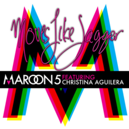

Adam Levine
Adam Noah Levine is an American musician, singer, songwriter, record producer,
and actor who is best known as the lead vocalist of the band Maroon 5.
Levine began his musical career in 1994 with the band Kara's Flowers,
of which he was the lead vocalist and guitarist.
Born: 18 March 1979 (age 42 years), Los Angeles, California, United States
Height: 1.82 m
Spouse: Behati Prinsloo (m. 2014)
Children: Dusty Rose Levine, Gio Grace Levine
Siblings: Michael Levine, Sam Levine, Julia Milne Levine, Liza Levine
To read more on Adam click here
BAND SONGS
Top songs playlist
 "Harder To Breathe" (2002)
"Harder To Breathe" (2002)
This song was written by frontman Adam Levine for the band's debut album, Songs About Jane (2002).
The song expresses tension, having been written quickly under trying circumstances.
It tells the story about a former relationship Levine was involved in.
"Harder to Breathe" was met with positive reception by music critics, who praised the track's sound.
It was released in 2002 as the lead single of Songs About Jane.
Play Harder to Breathe

"Moves Like Jagger" featuring Christina Aguilera (2011)
It was released by A&M Octone Records on June 21, 2011, as the fourth and final single from the
re-release of the group's third studio album Hands All Over (2010).
The song was written by Adam Levine, Ammar Malik, Benny Blanco, and Shellback; the latter two are
also the producers. "Moves like Jagger" is a disco and electropop song and is backed by ynths and
electronic drums. The lyrics refer to a male's ability to impress a love interest with his dance moves,
which he compares to those of Mick Jagger, the lead singer of the Rolling Stones.
Play Moves like Jagger
"One More Night" (2012)
The song was released on June 19, 2012, as the second single from their fourth studio album
Overexposed (2012). It was written by Adam Levine, Shellback, Max Martin, and Savan Kotecha,
while production was handled by Shellback and Martin. It is a reggae-influenced pop song.
Lyrically, it talks about not getting along with someone and hoping he only stays with her just
"one more night". It is built upon the idea that the heart, mind, and body usually want opposing
things.
Play One more Night
"Payphone" featuring Wiz Khalifa (2012)
It was released on April 16, 2012, as the lead single from their fourth studio album, Overexposed (2012).
The song was written by Adam Levine, Benny Blanco, Ammar Malik, Robopop, Shellback, and Khalifa, and
produced by Blanco and Shellback. [1] The song is a pop ballad and describes a romance that ended abruptly.
It has received favorable reviews from music critics, who praised the catchy melody and named it "a radio
success", but some others dismissed its title and Khalifa's appearance.
Play Payphone
"Sugar" (2015)
It was written by Mike Posner, Adam Levine, Dr. Luke, and Jacob Kasher Hindlin together with its
producers Ammo and Cirkut. It was sent to contemporary hit radio in the United States,
as the third single from the album on January 13, 2015. "Sugar" is a disco, funk-pop, and
soul song that features a wide range of instruments including percussion, keyboards and guitars.
Commercially, the song peaked at number two on the US Billboard Hot 100 and became the band's
third top 10 single from V, and eighth consecutive top 10 entry. "Sugar" is the 68th song in history to
score at least 20 weeks in the top 10 of the Hot 100
Play Sugar
"This Love" (2004)
The song was released on January 27, 2004, as the second single from their debut album Songs
About Jane (2002). The track is built around a piano-led strut and a repeating guitar sound.
The song's lyrics are based on the band's lead vocalist Adam Levine's break-up with an ex-girlfriend.
He revealed that the song was written in the "most emotionally trying time" in his life.[1] He has also
described the lyrics of this song as being extremely erotic.[2] "This Love" was critically acclaimed by
music critics, who noted the track's musicscape.
Play This Love
"She Will Be Loved" (2004)
It was written by frontman Adam Levine and lead guitarist James Valentine.
The song was released on June 8, 2004, as the third single from Maroon 5's 2002 debut studio album,
Songs About Jane. The single peaked at No. 5 in the United States and by December 2012 had sold more
than 2,722,000 digital downloads.[1] It peaked at No. 4 in the United Kingdom. In Australia, it
reached No. 1, a position it held for five non-consecutive weeks. The single is noted for its music
video starring Kelly Preston in a mother-daughter love triangle with lead singer Adam Levine.
Play she will be Loved
"Animals" (2014)
It was released on August 25, 2014, as the second single from the band's fifth studio album V (2014).
The song written by Adam Levine, Benny Blanco and Shellback; the latter is also the producer.
The remix versions of the song featuring American rappers J. Cole[1] and Big Boi,[2] both written
and produced by Freaky Ta
Play Animals
 "Don't Wanna Know" featuring Kendrick Lamar (2016)
"Don't Wanna Know" featuring Kendrick Lamar (2016)
It features additional vocals from American rapper Kendrick Lamar.
The song was released on October 12, 2016,[4] as the lead single and was included on the deluxe
version from their sixth studio album Red Pill Blues (2017).[5] The song reached the top 10 in
23 countries, including number 6 in the United States.
Play Don't Wanna Know
More songs by Maroon 5 click here